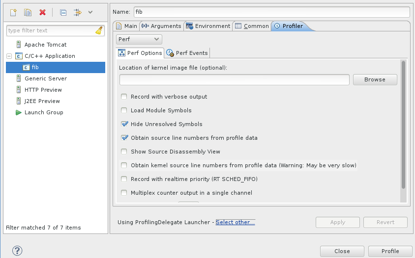

| Launching a Profile | ||
|---|---|---|
|
|
|
|
| Installing | Profiling Configuration | |
Perf plug-in provides useful profile information in a user-friendly interface, gathering the required information from the Perf command-line tool and hooking it into the Eclipse and CDT's facilities.
During a profile run, the Perf plug-in will start, stop and perform other Perf tasks in the background as needed, while the binary being profiled runs as normal.
The Perf plug-in for Eclipse includes a one-click launch feature which profiles the binary with default options. To use the one-click launch, right click on the project, the binary or in an open editor for a source file belonging to that project.Here there are two ways to start a launch:
Navigating to Profiling Tools and clicking Profile With Perf

or navigating to Profiling Tools, clicking on Profile Timing and setting the timing tools to be Perf

To properly set the preferences you can go to C/C++->Profiling->Categories->Timing and set the default timing tool to be Perf.

You can also set project specific preferences which override workspace preferences by using project Properties->C/C++ General->Profiling Categories->Timing.

You can also profile your application using Profile as...->Local C/C++ Application whereby you have set the profiling tool in the Profiler tab to be perf.

The Perf plug-in allows you to configure a profile run using several options. These options are exposed via the launch configuration in a user-friendly manner, allowing for a more complex profile.
To customize a profile, right click on the project, the binary or in an open editor for a source file belonging to that project. Then, navigate to Profiling Tools > Profile Configurations... to open the Profile Configurations menu. Refer to the Profiling Configuration section for more information about configuring a profile.
After configuring a profile, click the Profile button to launch the profile.
|
|

|
|
| Installing | Profiling Configuration |